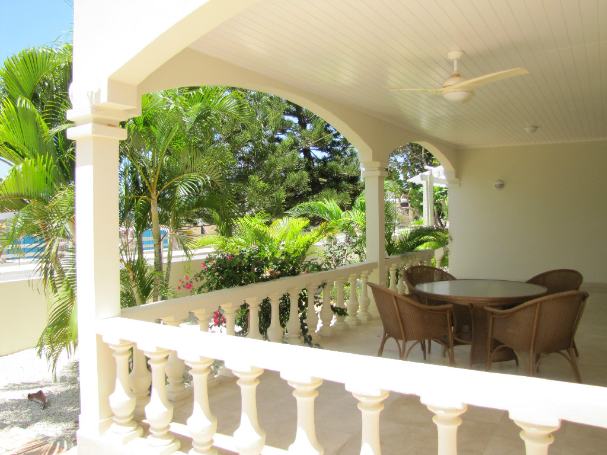
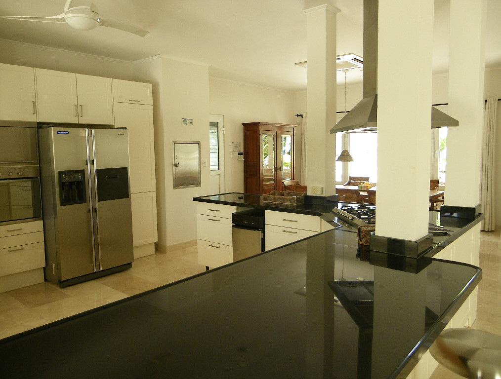
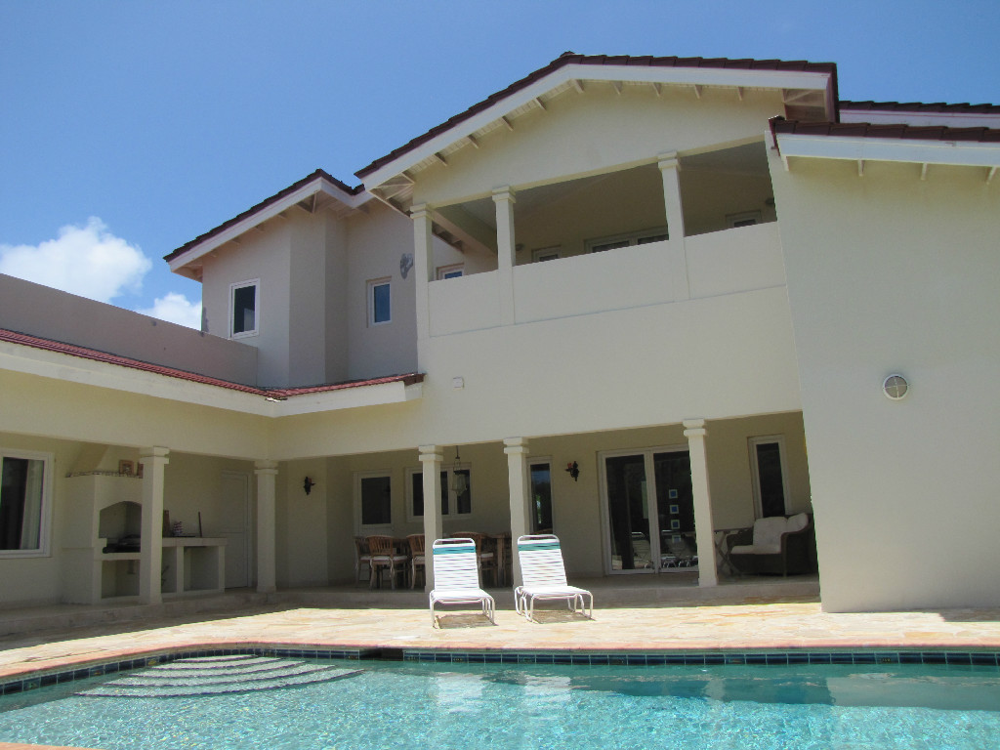
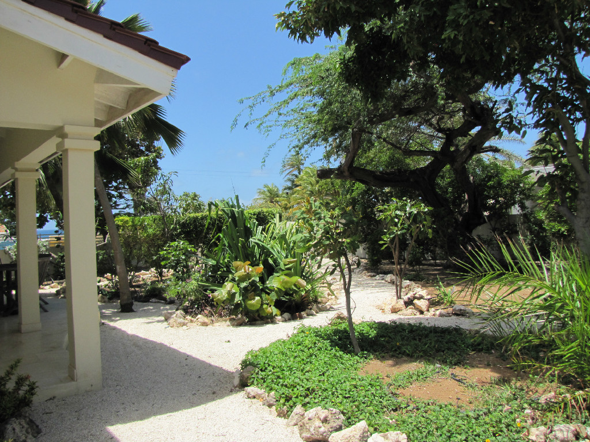

Villa Gravendeel can be rented for four, six or eight persons as the villa is split into three parts. The villa is perfect for couples or families with young children and accommodates comfortably four to eight persons. At your convenience a baby cot could be added.
When renting for four persons you have access to the first floor of the villa that offers two spacious bedrooms with private bathrooms, a front terrace with dining table to enjoy the ocean view, large modern kitchen, inside dining area, a cozy sitting area that opens up to the landscaped garden on the side of the villa and the living area that opens up to the back terrace. The back terrace has a completely private pool with a sitting, dining area, and outdoor kitchen with built in BBQ. Here you can enjoy an amazing view of Aruba's natural landscape and it's perfect for entertaining or a moonlight meal after a nice relaxing day around the pool or at the beach. The one-car-garage and the laundry facility are also accessed on the first floor.
Renting for six persons includes the spacious apartment attached to the villa with king size bed, private kitchen and private bathroom. This apartment is only available to renters of the first floor of the villa and will not be rented separately.
The second floor which can be rented when the villa is used for eight persons is accessible via a private entrance and offers a whole new living experience. It offers an additional full kitchen, living and dining area which all opens up to the spacious terrace that offers a view of the Caribbean ocean and stunning sunsets. The second floor also offers a spacious bedroom and ensuite bathroom with a private terrace. This floor also has a separate office overlooking the lighthouse, beach and ocean. The second floor has a staircase towards the private entrance, laundry facility and garage as a convenience.
Please note that the property is privately owned and managed and for your exclusive use only. No other persons will be sharing the outside patio areas and pool area with you. In the occasion that you are renting the first floor only, it's possible that the second floor is inhabited by our Property manager, who will make sure that everything is ready for you when you arrive and will do everything possible to make your stay at Villa Gravendeel very memorable. Please note that in any occasion the rented property is for your exclusive use only. No other persons will be sharing the outside patio areas and pool area with you.

The villa has an open layout concept with a modern galley kitchen, dining area, a cozy sitting area that opens up to the landscaped garden on the side of the villa and the living area that opens up to the outside terrace and pool area. From the front porch you have a stunning view of the Caribbean ocean and it is located across the street of the famous Boca Catalina beach. The large covered front and back porches are spacious and both have dining tables and comfortable outdoor sofas. Beautiful Tropical songbirds keep you company as you while away the afternoon in a hammock under the Kiwi tree.
The first floor all have views of the beach and ocean in the front and the cunucu (the Aruban natural landscape) through large French doors leading to the back yard. The first floor offers two spacious bedrooms with private bathrooms and access to the one car- garage and the laundry facility. The back terrace has a nice size pool with a sitting, dining area, outside shower and BBQ. A spacious apartment with private kitchen and private bathroom is attached to the villa. This apartment is only available to renters of the villa and will not be rented separately.
The natural stone pool deck with outdoor shower, outdoor kitchen and built in BBQ, has an amazing view of Aruba's natural landscape and is perfect for entertaining or a moonlight meal after a nice relaxing day around the pool or at the beach.
The landscaped side yard with cozy sitting terrace and gravelled walk ways blends in seamlessly with the naturally bushed fence of Tierra del Sol Golf Resort in the back of the villa.
The second floor which can be rented at a premium is accessible via a private entrance and offers a whole new living experience. It offers a full kitchen, living and dining area which all opens up to the spacious terrace that offers a view of the Caribbean ocean and sunsets. The second floor also offers a spacious bedroom and bathroom with a private terrace. The large front balcony offers a spectacular view of the ocean to the west and the bedroom's balcony a gorgeous view of the hills and golf course to the east. This floor also has a separate office overlooking the lighthouse, beach and ocean. The second floor has a staircase towards the private entrance, laundry facility and garage as a convenience.
Location
The Arashi/Malmok area is the most exclusive area in Aruba and one of the safest. The area not only
has beautiful beaches, it is also the most famous snorkeling area in Aruba. The ocean is very shallow
for quite a ways offshore and you can see a huge number and variety of fish just next to the beach.
The water is usually very calm here, making it a perfect place for children and beginner snorkelers.
You can experience the best of both worlds in this location. Just down the road, literally a couple of
minutes drive to the south, is the highrise hotel area of Palm Beach, with a huge variety of
restaurants, shopping, spas, cinemas, and casinos. You can book any type of adventure or tour
imaginable here - skydiving, parasailing, horseback riding, ATV, scuba, sunset catamaran sails along
the coast, and much more.
A few minutes to the north of the villa is the unspoiled wilderness of the lighthouse area. This area has been left completely undeveloped and is a great place for strolls and to see the wild natural side of Aruba. There is a well-maintained unpaved road running along the coast on the north point where you can see blowholes, ancient Divi-Divi trees, sanddunes and piles of giant granite boulders along the shore and large stands of cactus inland. A perfect place for photographers. Truly, close to everything, while being "away from it all". Although we would recommend renting a car to get around the island, there is a regular bus service between Arashi, the hotel area, and downtown, which passes right by the house.
We would be glad to assist you during your holiday and can offer you our extra services.